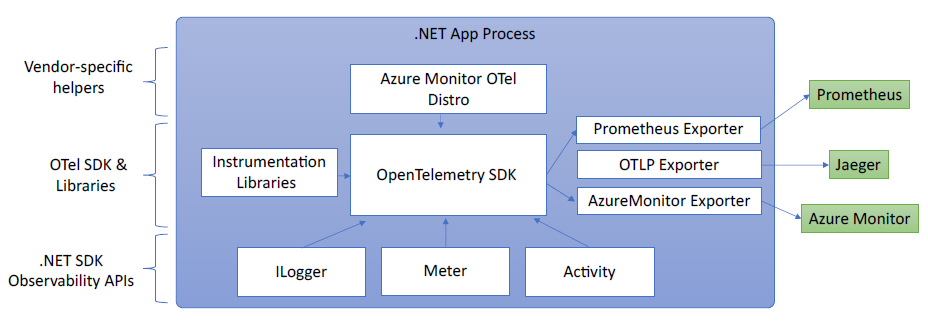

observability and telemetry
Overview
Observability is the ability to monitor and analyze telemetry about the state of each component in a distributed system, to observe changes in performance, and to diagnose why those changes occur.
- Intended to be transparent to the primary operation and have an insignificant performance impact so that it may be used continuously.
- A combination of logs, metrics, and distributed tracing.
Observability approaches in .NET:
- Explicitly in code (via OpenTelemetry)
- Out of process via EventPipe
- Inside a process via a startup hook — a low-level hook that allows injecting managed code to run before the main application’s entry point
These notes focus on approach #1 above.
Documentation: https://learn.microsoft.com/en-us/dotnet/core/diagnostics/observability-with-otel
OpenTelemetry
A cross-platform, open standard for collecting and emitting telemetry data. OTel is supported by a wide variety of APM systems including Prometheus, Grafana, Azure Monitor, and many others.
.NET’s OTel implementation uses these platform APIs for instrumentation:
- Logging:
Microsoft.Extensions.Logging.ILogger<T> - Metrics:
System.Diagnostics.Metrics.Meter - Distributed tracing:
System.Diagnostics.ActivitySourceandSystem.Diagnostics.Activity

OTel collects telemetry from those APIs and other sources and exports them to an APM system for storage and analysis.
OpenTelemetry Packages
OpenTelemetry— core APIOpenTelemetry.Instrumentation.AspNetCore— instrumentation for ASP.NET Core and KestrelOpenTelemetry.Instrumentation.Http— instrumentation forHttpClientandHttpWebRequestOpenTelemetry.Instrumentation.SqlClient— instrumentation forSqlClientOpenTelemetry.Exporter.Console— exporter for the consoleOpenTelemetry.Exporter.Prometheus.AspNetCore— exporter for Prometheus implemented using an ASP.NET Core endpoint
Example
This example uses Prometheus for metrics collection, Grafana for a dashboard, and Jaeger for distributed tracing.
-
Create a new simple web API project:
dotnet new web -
Add metrics and activity definitions:
// Custom metrics for the application var greeterMeter = new Meter("OtPrGrYa.Example", "1.0.0"); // greetings.count is the metric that will hold the number of times the API has been called var countGreetings = greeterMeter.CreateCounter<int>("greetings.count", description: "Counts the number of greetings"); // Custom ActivitySource for the application var greeterActivitySource = new ActivitySource("OtPrGrJa.Example"); -
Create an API endpoint:
app.MapGet("/", SendGreeting);async Task<String> SendGreeting(ILogger<Program> logger) { // Create a new Activity scoped to the method using var activity = greeterActivitySource.StartActivity("GreeterActivity"); // Log a message logger.LogInformation("Sending greeting"); // Increment the custom counter countGreetings.Add(1); // Add a tag to the Activity activity?.SetTag("greeting", "Hello World!"); return "Hello World!"; } -
Reference the required OTel packages:
<ItemGroup> <PackageReference Include="OpenTelemetry.Exporter.Console" Version="1.5.0" /> <PackageReference Include="OpenTelemetry.Exporter.OpenTelemetryProtocol" Version="1.5.0" /> <PackageReference Include="OpenTelemetry.Exporter.Prometheus.AspNetCore" Version="1.5.0-rc.1" /> <PackageReference Include="OpenTelemetry.Extensions.Hosting" Version="1.5.0" /> <PackageReference Include="OpenTelemetry.Instrumentation.AspNetCore" Version="1.5.0-beta.1" /> <PackageReference Include="OpenTelemetry.Instrumentation.Http" Version="1.5.0-beta.1" /> </ItemGroup> -
Configure OpenTelemetry’s providers:
var tracingOtlpEndpoint = builder.Configuration["OTLP_ENDPOINT_URL"]; var otel = builder.Services.AddOpenTelemetry(); // Configure OpenTelemetry Resources with the application name otel.ConfigureResource(resource => resource .AddService(serviceName: builder.Environment.ApplicationName)); // Add Metrics for ASP.NET Core and our custom metrics and export to Prometheus otel.WithMetrics(metrics => metrics // Metrics provider from OpenTelemetry .AddAspNetCoreInstrumentation() .AddMeter(greeterMeter.Name) // Metrics provides by ASP.NET Core in .NET 8 .AddMeter("Microsoft.AspNetCore.Hosting") .AddMeter("Microsoft.AspNetCore.Server.Kestrel") .AddPrometheusExporter()); // Add Tracing for ASP.NET Core and our custom ActivitySource and export to Jaeger otel.WithTracing(tracing => { tracing.AddAspNetCoreInstrumentation(); tracing.AddHttpClientInstrumentation(); tracing.AddSource(greeterActivitySource.Name); if (tracingOtlpEndpoint != null) { tracing.AddOtlpExporter(otlpOptions => { otlpOptions.Endpoint = new Uri(tracingOtlpEndpoint); }); } else { tracing.AddConsoleExporter(); } });And configure the Prometheus scraping endpoint:
// By default, the endpoint is /metrics app.MapPrometheusScrapingEndpoint(); -
Run the project:
# Access the endpoint at /metrics curl -k http://localhost:7275
Logging
By default, the Console provider is enabled. Others can be added.
Accessing Metrics
Accessing /metrics will show output similar to this:
curl -k https://localhost:7275/
Hello World!
curl -k https://localhost:7275/metrics
# TYPE greetings_count counter
# HELP greetings_count Counts the number of greetings
greetings_count 1 1686894204856
# TYPE current_connections gauge
# HELP current_connections Number of connections that are currently active on the server.
current_connections{endpoint="127.0.0.1:7275"} 1 1686894204856
current_connections{endpoint="[::1]:7275"} 0 1686894204856
current_connections{endpoint="[::1]:5212"} 1 1686894204856
...
Accessing Tracing
In the server’s console, the console trace exporter’s output is visible without output from two activities: one from the custom ActivitySource, and one from ASP.NET Core:
Activity.TraceId: 2e00dd5e258d33fe691b965607b91d18
Activity.SpanId: 3b7a891f55b97f1a
Activity.TraceFlags: Recorded
Activity.ParentSpanId: 645071fd0011faac
Activity.ActivitySourceName: OtPrGrYa.Example
Activity.DisplayName: GreeterActivity
Activity.Kind: Internal
Activity.StartTime: 2023-06-16T04:50:26.7675469Z
Activity.Duration: 00:00:00.0023974
Activity.Tags:
greeting: Hello World!
Resource associated with Activity:
service.name: OTel-Prometheus-Grafana-Jaeger
service.instance.id: e1afb619-bc32-48d8-b71f-ee196dc2a76a
telemetry.sdk.name: opentelemetry
telemetry.sdk.language: dotnet
telemetry.sdk.version: 1.5.0
Activity.TraceId: 2e00dd5e258d33fe691b965607b91d18
Activity.SpanId: 645071fd0011faac
Activity.TraceFlags: Recorded
Activity.ActivitySourceName: Microsoft.AspNetCore
Activity.DisplayName: /
Activity.Kind: Server
Activity.StartTime: 2023-06-16T04:50:26.7672615Z
Activity.Duration: 00:00:00.0121259
Activity.Tags:
net.host.name: localhost
net.host.port: 7275
http.method: GET
http.scheme: https
http.target: /
http.url: https://localhost:7275/
http.flavor: 1.1
http.user_agent: curl/8.0.1
http.status_code: 200
Resource associated with Activity:
service.name: OTel-Prometheus-Grafana-Jaeger
service.instance.id: e1afb619-bc32-48d8-b71f-ee196dc2a76a
telemetry.sdk.name: opentelemetry
telemetry.sdk.language: dotnet
telemetry.sdk.version: 1.5.0
Collecting Metrics with Prometheus
Prometheus is a metrics collection, aggregation, and time-series database system.
Follow this documentation to install and configure Prometheus.
Creating a Dashboard with Grafana
Grafana is a dashboard creation tool that can create dashboards and alerts from Prometheus and other data sources.
Follow this documentation to install and configure Grafana.
Distributed Tracing with Jaeger
Jaeger is an open source tool to collect information on activities (units of work) and visualize this information.
Follow this documentation to install and configure Jaeger.
Observability with Application Insights (Azure Monitor)
Application Insights, part of Azure Monitor, is an APM system that combines metrics collection, dashboards, and distributed tracing.
Follow this documentation to use Azure Monitor and Application Insights.